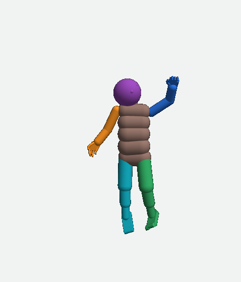
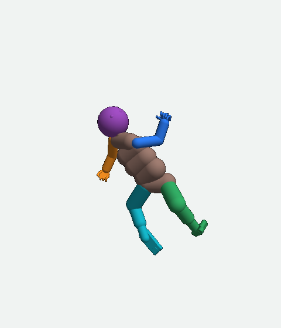
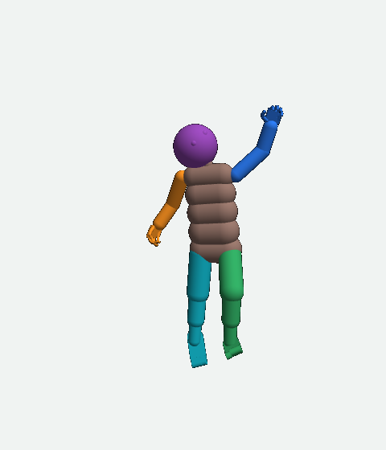
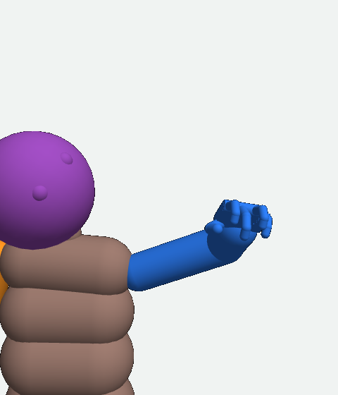
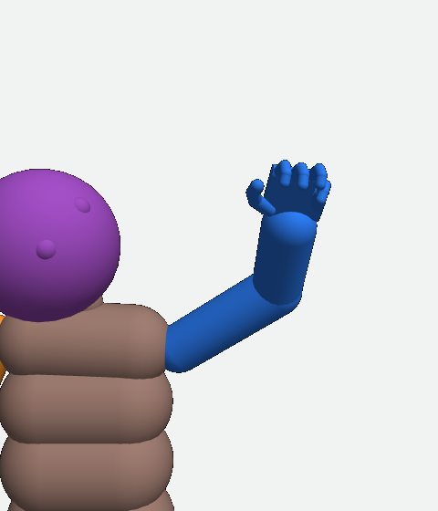
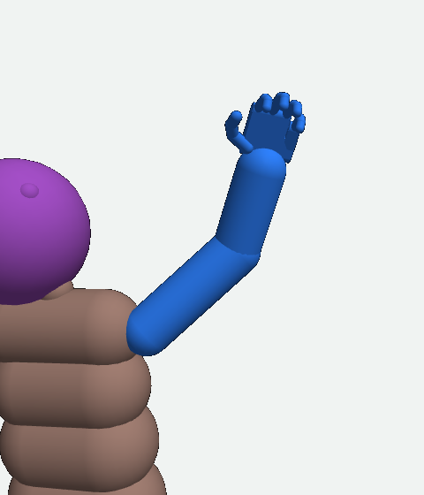
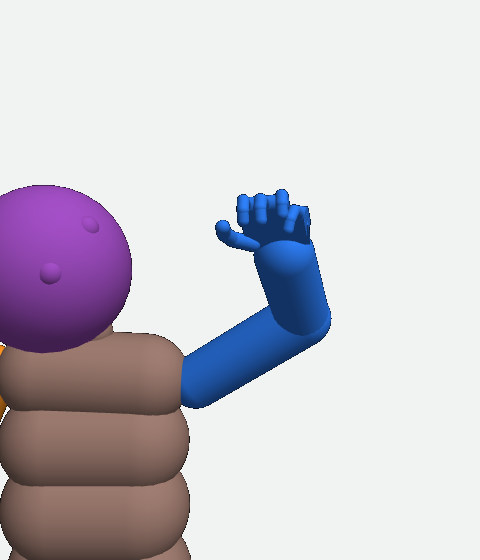
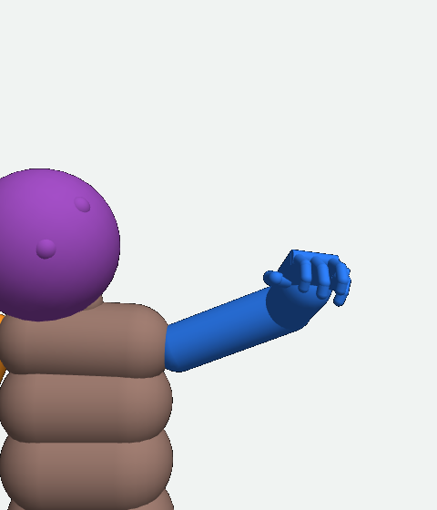

MIMo body repair • revised October 23, 2026, 9:23 AM PDT
Why the arm missed, and what is being repaired
What you asked. On October 21 you sent a screenshot of one left-arm command. The middle picture looked wrong, and the final body looked much like the start. This page follows that one command from the numbers sent to the body to the measured result (sections 1 to 4), names the two faults found (sections 5 and 6), shows what the learning run of October 23 measured (section 7), and states where the repair stands (section 8). The rest is record: the proposal that was not adopted (9), older records (10), the checklist (11), the review record (12) and the sources.
Where things stand at 9:23 AM PDT, October 23.
The command-number repair (section 6): built October 22 and checked, 27 of 27 conditions passed (Tests row decoder_inert_fields_check2). It ran inside the learning run below. Not VERIFIED: no measurement yet ties it to a better reach.
The learning run (section 7): done. 100 learning updates, model step 496,250 to 496,350, 2:52 AM to 2:59 AM PDT. The model and all eight worlds are saved. All 72 recorded outcomes are joined to their command, their two predictions and their result.
The diagnosis of those 72 outcomes (section 7): done at 5:23 AM PDT. The predictor places arm parts that no connected arm can hold, and its predicted scores are lower than the measured ones.
The arm-fit code (IK/FK, defined in section 4 and section 9): 15 of 15 tests passed. Its calibration record was refused by its own stopping check: 33 of 100 left and 20 of 100 right fits ended with a gradient above the 1e-10 radian line. The investigation was closed at 7:20 AM PDT. The code is not used in the planner.
The repair under test, the arm-consistency loss term (section 8): built and checked. 24 of 24 conditions passed at 7:03 AM PDT; a defect in its elbow term was then found and repaired, and 25 of 25 conditions passed at 7:44 AM PDT. With the term off, the code equals the old code bit for bit. State: QUALIFIED/OFF.
The matched learning pair (weight 0 against weight 0.2, 100 model steps each from the same saved state): authorized by the overseer at 8:50 AM and 9:07 AM PDT. Not launched. At 9:06 AM the preflight tool refused the second of the two adoption blocks (one decision admits one block); the overseer issued the second decision at 9:07 AM. At 9:23 AM no trainer or owner process runs, and the supervisor control file reads pause.
1 • Your screenshot: one command, three pictures
The earlier pose, the command and the actual movement are three different things.
The words used on this page, defined once here:
Record: the saved measurements at one model step (one 50 ms model update): the position and the turn of each of 26 body parts.
Goal: one earlier record that the planner's search measures every prediction against. In this example it is the record 3 model steps (0.15 s) before the start.
Hand point: a fixed point inside the palm (the hand body's origin). The green square is the hand point in the goal record.
Command: 26 body parts × 9 numbers: x, y, z position in cm; a turn as 4 numbers (a quaternion); a radius; a strength from 0 to 1.
Controller: the program that computes motor controls from a command (section 3).
Predictor: the learned program (the body head) that outputs where each body part will be 0.25 s after a command. The planner's search compares commands by scoring its outputs (section 5).
The blue dot is the hand position written in this command. It is 23.0 cm from the hand's start, and it is not the green square. The old middle picture turned each part to its requested turn with no joint limits. It showed no body that existed.
View:
Hand point in the goal recordHand position written in the commandHand point in this picture
Before the command

The hand point starts 7.5 cm from the green square.
The old command drawing

Each part was turned to its requested turn with no joint limits. The drawn hand is not even at the blue dot.
Actual result after 0.25 s

The hand point ends 14.6 cm from the green square. It moved 7.4 cm, and the gap grew by 7.1 cm.
Real saved MIMo states, except the labelled command drawing. Body 3, the command at model step 494,810 of run POSE_A_off_494025; start record 494,809, end record 494,814, goal record 494,806. The avatar is turned upright for inspection; it was lying down. The floor and the caregiver are hidden, so a marker that looks high here is not necessarily above the real floor.
Two separate problems. The strange drawing: it showed turns the elbow cannot make (section 3). The poor movement: the hand point ended farther from the green square (sections 2 to 4). Fixing the drawing alone cannot change where the motors put the hand.
2 • Inside the same left arm: seven joint turns
One shoulder turn went to 0.3° from its limit. The elbow opened instead of bending back toward its goal angle.
The arm has seven joint turns: three at the shoulder, one at the elbow and three where the hand joins the forearm. Fingers have their own joints and are not shown. Pick a joint turn below. The three pictures mark its axis on the goal record, the start and the actual result.
Camera:
Goal record

Start

Actual result

Selected joint. The black line marks the axis the joint turns around. It is not the path the arm followed. An axis facing the camera looks short; use the side views. The model records turns as positive or negative angles around that axis; a negative angle is not an error.
Shoulder forward/back turn: goal 9.9°, start 18.1°, result −27.7°. Its limit is −28°.
Elbow bend: goal −68.0°, start −50.2°, result −35.8°. It opened, away from the goal's bend.
Large joint changes can look small in a whole-body picture.
All seven turns: angles and allowed ranges
Joint turn
Goal record
Start
Result
Allowed range
These are saved joint angles. The planner did not send seven joint targets; its command held body-part positions, turns and strengths (section 1).
3 • How a command becomes motion
A command is a request. The motors must move a connected arm, and this request could not be met.
Command numbers for the arm Upper-arm turn + strength Forearm turn + strength Hand position + turn + strength
↓
One solve for seven joint changes The controller stacks the hand's position error (weighted 8 per metre) and the three parts' turn errors, each weighted by its part's strength. It solves for the seven joint changes that make that weighted total smallest (damped least squares).
↓
Limit, then motor controls Each joint change is clipped to its joint range. Each motor control = the owning part's strength × (6 × angle change in radians − 0.3 × joint speed in radians per second). If any control exceeds its motor limit, the whole arm's controls are scaled down together.
↓
Physics produces the movement Motor force, body weight, existing motion and floor contact set where the body goes.
Why the request conflicts with itself
The elbow bends around one axis. It cannot twist the forearm in every direction while the upper arm keeps its own requested turn.
The command requested one turn for the upper arm and another for the forearm. With the upper arm held at its requested turn, no elbow angle inside its range puts the forearm at its requested turn. The nearest angle still leaves 57.8° of difference. That is a conflict between two requested turns, not an angle by which the real elbow passed its limit.
The command's hand point is 0.47 cm below the floor. In the simulation, floor contact can block that movement.
At least one requested arm turn had to be missed. These two facts do not say how much of the 7.1 cm growth of the gap each one caused. The learning run of October 23 recorded the full prediction and the actual joints for every command, so that split can now be measured (section 7).
Exact command and motor calculation
Each body-part row has nine numbers: x, y, z position in centimetres; four numbers for a turn (a quaternion, one way of writing a 3-D turn); radius; strength.
Part
Requested x, y, z (cm)
Strength
What the controller uses
The gains come from the run's configuration: decoder_kp 6.0 and kd 0.3 (the default), position weight 8 radians per metre. The upper-arm and forearm positions and every radius are ignored by this controller. The predictor still reads them (section 6).
4 • Which joints had to change: calculated shapes, no physics
Changing one joint is not the same as moving the hand to the goal.
These are calculated MIMo shapes, not movements. Start from the same recorded body, change only the named joint angles, and compute where the connected bones put the hand. No motors or physics were run. This computation is forward kinematics (FK): joint angles in, part positions out. The reverse computation, inverse kinematics (IK), starts from wanted part positions and turns and searches for joint angles inside their limits that come closest to them.
A. Original start
Gap to the goal hand point: 7.5 cm.
B. Change only the elbow

Elbow bend set to its goal value, −50.2° → −68.0°; the other joints at their start. The hand gap becomes 8.1 cm: worse.
C. Change all seven arm turns

Shoulder, elbow and hand turns all set to their goal values. The hand gap becomes 1.1 cm. Not zero: the rest of the body is still at the start.
Green square: hand point in the goal record. Orange ring: hand point in each calculated shape. The dashed line shows their separation in this camera view; the printed gaps use all three dimensions. Both calculations use the real joint limits and bone lengths. They do not predict time, force, staying upright, or contact.
What these pictures show: changing only the elbow makes the hand gap worse. Changing all seven arm turns brings it to 1.1 cm. A repair must therefore check the whole connected arm. These shapes do not show whether the motors can produce them in 0.25 s.
5 • The scoring change built on October 22
A better prediction is not always a better movement.
The planner's search evaluates 21 commands per body: a first command and 20 changed ones. It scores the predictor's output for each and sends the command with the lowest score. The simulator then applies the motors and measures the actual movement.
Old rule
Score = (the difference between the predicted sensor readings and the goal's sensor readings) + (the strength the command requests). In the screenshot's run the strength cost fell from 0.076 to 0.009 while the sensor term fell from 0.099 to 0.082, so most of the score drop came from requesting less strength.
The prediction covered 0.05 s, while the command ran for 0.25 s.
New rule, built October 22
Pose-error score: the predicted positions and turns of 25 body parts after 0.25 s, compared with the goal record. 0 = every part at the goal. 1 = every axis one typical 0.25 s movement (1.80 cm or 11.0°) away.
A changed command is sent only if its predicted score is below both the start's score and the first command's predicted score. Otherwise the first command is sent. Strength cost only breaks an exact tie.
This changes how predictions are compared. It does not make the predictions accurate. A better total over 25 parts can hide one hand ending farther from its goal point.
Exact score and the first-command exception
For each of the 25 body parts: divide each position difference (x, y, z) by 1.8 cm and square it; take the shortest rotation from the predicted turn to the goal turn as three numbers (axis × angle), divide each by 11° and square it. Average all the position terms, average all the turn terms, and add the two averages. Neither scale defines a successful reach.
The first command is not required by this rule to predict improvement. When no changed command passes, it is sent as it is: 6 of the 72 commands in the run of October 23.
6 • Two faults, and the state of each repair
The prediction must describe something the arm can do.
Repair built, checked, used in training; not verified
Fault 1: the search changed numbers the controller ignores.
The controller uses the upper arm's and forearm's turns and strengths and ignores their positions and every radius (section 3). The predictor reads all 9 numbers of every part. So the search could lower a predicted score by changing a number that changed nothing in the motor request.
Repair: every changed command keeps those ignored numbers at the first command's values. Built October 22 (commit e058c0c81). Checked: 16 of 16 conditions (Tests row decoder_inert_fields_check), then 27 of 27 after one further change (decoder_inert_fields_check2). It ran in the learning run of October 23. Not VERIFIED: no measurement yet ties it to a better reach.
Repair under test (section 8)
Fault 2: the predictor places connected parts where no arm can hold them.
The predictor outputs a position and a turn for each body part on its own. No bone length, hinge axis or joint range enters that computation. So its predicted elbow can sit off the end of its predicted upper arm.
Measured on 392 older predictions of executed commands: the predicted elbow sat off the end of the predicted upper arm by a median 0.81 cm (left) and 0.73 cm (right). The same reading on measured poses is at most 0.004 cm, and all 392 were above that floor. On the 72 predictions of October 23: a median 1.02 cm (left) and 0.69 cm (right), and the predicted elbow turned off its hinge axis by a median 3.56° and 3.71° (section 7).
Repair under test: a loss term that penalizes those readings during learning (section 8). An arm-fit check at every search choice (IK/FK) was built and tested but is not used in the planner (section 9).
7 • The learning run of October 23 and its 72 matched records
The predictor's arm parts do not join, and its predicted scores are lower than the measured ones. Neither fact alone explains the misses.
The run: 100 learning updates from model step 496,250 to 496,350 in eight simulated bodies, 5.0 s of simulated time each, 2:52 AM to 2:59 AM PDT. The model and all eight worlds are saved. At nine planning model steps (496,260 to 496,340) in each body, the trainer saved the command, the first prediction, the selected prediction, the start record and the end record. That is 72 outcomes, all 72 joined to their records.
What was measured over the 72 outcomes
Measurement
Count
Pose-error score (section 5) at the end below the start
43 of 72
Mean distance of the 25 body parts to the goal pose, end below start
45 of 72
Left palm point nearer its goal point at the end than at the start
44 of 72
Right palm point nearer
38 of 72
Both palm points nearer
25 of 72
The search changed the command (the other 6 sent the first command)
66 of 72
Among the 66 changed: predicted score below the first command's predicted score
66 of 66
Among the 66 changed: measured end score below the start
42 of 66
Among the 6 unchanged: measured end score below the start
1 of 6
Three of the 72 records are inexact: the nearest saved record was farther from the exact time than the 5 ms allowance (plan step 496,270 body 2; 496,280 body 2; 496,300 body 3). Without them, on the 63 changed bodies of 69: end score below start 39 of 63; left palm point nearer 43 of 63; right 33 of 63; the body distance fell in 42 of 69.
What reaching would look like: a palm point ending within a declared arrival distance of its goal point, and doing so again. No arrival distance has been declared, so these counts measure direction, not arrival.
Three findings
The parts do not join. On the first prediction, the predicted elbow sat off the end of the predicted upper arm by a median 1.02 cm (left) and 0.69 cm (right); the elbow turned off its hinge axis by a median 3.56° and 3.71°; the upper arm's origin sat off its place on the chest by a median 0.26 to 0.29 cm. On the measured end poses the same readings are 0.000001 cm and 0.000001° in size: the measurement floor.
The search's selected prediction was less joined than its first in 36 of the 66 changed bodies (by a median 0.21 cm more) and more joined in 30. Larger predicted gains came with larger added gaps (rank correlation 0.35 to 0.39, where 0 is no relation and 1 is in step). The gains and the gaps occurred together; these records do not show that one caused the other, and most of the gap was already in the first prediction.
The predictions are too hopeful. The selected prediction's score was below the measured end score by a median 0.634 (score units of section 5). The larger the predicted gain, the larger that miss: rank correlation 0.30, the strongest relation measured. The arm inconsistency's relation to the miss: 0.14 to 0.27.
Largest disagreement between predicted and measured score: body 5, the command at model step 496,280. Right palm point to its goal point.
Start
Selected prediction
Measured end
19.48 cm
16.62 cm
23.63 cm
The predicted right palm point and the measured one at the end were 7.49 cm apart.
The median outcomes are the middle-ranked ones by the size of the measured score change. On a phone, swipe the picture sideways to see both arms.
How to read the prediction panels. Purple dots are the predictor's output for the shoulder, elbow and palm point, each output on its own, so no line joins them. The grey rings joined by a dashed line are a fitted allowed arm: one set of seven joint angles inside their limits, found by a local fit and placed on the predicted chest. It is a comparison drawing, not the nearest possible arm and not a movement. Red lines: the gap between each purple dot and that fitted arm. The faded avatar is the start body.
The 5 ms lag between the stored pose and the drawn joints
The stored pose that the printed distances use was saved one 5 ms physics substep before the joint positions the picture is drawn from. In the goal panels the two palm points differ by up to 0.26 cm. For the three inexact records above, the nearest saved record was farther from the exact time than this allowance (2.60, 1.49 and 1.23 times it). They stay nearest-record matches and are counted apart.
8 • The repair under test: an arm-consistency loss term
A new loss term penalizes predicted arm parts that no connected arm can hold. It is built and checked. A matched learning pair is authorized and not yet launched.
A loss term is a number the trainer lowers by changing the predictor's weights. The existing term (the body tenure loss) is the difference between the predicted 0.25 s movement of each part and the measured one. It stays unchanged and is logged on its own.
What the new term computes
Input: the predictor's output for one command: the positions and turns of the chest, upper arm, forearm and hand of each arm after 0.25 s (the same output the existing term grades).
Operation, four readings per arm from MIMo's model geometry: (a) shoulder link: the distance between the predicted upper-arm origin and its fixed place on the predicted chest; (b) upper-arm link: the distance between the predicted elbow and the point 12.04 cm along the predicted upper arm, where the forearm attaches; (c) elbow off-axis: the part of the predicted elbow turn that is not around the hinge axis, in degrees; (d) hand ball: how far the predicted hand origin lies outside a ball of radius 8.43 cm around its rest place in the forearm frame, a bound that holds for every wrist angle. Each reading is divided by 1.80 cm or 11.0°, passed through smooth L1 (squared when small, linear when large; the elbow term on the length of its 3-number vector), summed, and multiplied by the weight.
Output: one number per body added to the training loss. Its gradient reaches the body head's weights (21 parameters directly). It changes no command, score or selection. With the term off, or its weight 0, the loss, every gradient and the random state equal the old code bit for bit, and the saved predictor loads with 50 of 50 tensors equal.
Not constrained: an elbow angle beyond its range (a soft limit; logged only). The hand ball flagged 0 of 304 saved predictions, so it is inactive on this data.
The weight: 0.2
The rule was declared before the check. At weight 1, the new term's pull on the final layer divided by the existing term's pull is 2.465 at the 90th percentile over 152 saved examples. The weight times that ratio must be at most 0.5, and the largest weight in the series that meets it is 0.2. So for 90 of 100 screened examples the new term pulls at most half as hard as the existing one on the final layer. Not bounded: the other 10 of 100, the batch sum, the earlier layers and the optimizer's effect. The live clip scale is measured during the run.
Checks run (rows on the Tests page)
arm_consistency_check, 7:03 AM PDT: 24 of 24 conditions, 17.48 s. It then showed a defect: with each coordinate of the elbow reading penalized on its own, swings above about 125° to 135° were penalized less as they grew. The elbow term was changed to the length of its vector (commit 44ad0301e).
arm_consistency_check2, 7:44 AM PDT: 25 conditions and 48 swing directions passed. At exactly 180° the gradient is zero, which is recorded as a limit.
arm_consistency_sampling_check, 7:56 AM PDT: 32 of 32 conditions; the gradient sampling changes no training step bit for bit.
arm_consistency_comparison_smoke, 8:36 AM PDT: the comparison program read the saved 496,350 state and gave bit-identical results twice on 69 of 72 examples (the three inexact ones excluded), 62.51 s.
The matched learning pair
Control (weight 0) and treatment (weight 0.2), each 100 model steps (496,350 to 496,450) from the same saved state and eight worlds, one after the other. 600 s each including 180 s for saving; 1,500 s in all; both endpoints saved; code 71841320b; package manifest 9ce8ad8a with 43 files. It measures the predictor's accuracy on one common input built once, at both endpoints, and each branch's live outcomes: each palm point's distance to its goal point, the body's position and turn error, the four geometry readings and the existing term's error. The two live branches diverge after their first commands, so they are not identical-state trials. A favourable result supports a next decision only; nothing is promoted or resumed by itself. All seven preflight gates read FAIL; the launch is a bounded exception recorded gate by gate in the decisions of 8:50 AM and 9:07 AM PDT.
Launch state at 9:23 AM PDT: not launched. At 9:06 AM the preflight tool refused the second adoption block because one decision admits one block; the overseer issued the treatment's own decision at 9:07 AM. No trainer or owner process runs, and the supervisor control file reads pause. Next: the binding, the admissions and the owner launch under those two decisions; then the owner's readings, the common-input comparison and the judge.
9 • Not adopted: check every search choice with an arm fit
The earlier proposal, and what became of each of its four steps.
This proposal (October 22) would have fitted an arm to every prediction during the search and rejected predictions that no arm could hold. It was not adopted: the fit costs 0.202 s per arm and start, the calibration of its pass lines was refused, and the repair now under test acts on learning instead (section 8). The details below are the record, not permission to build it.
Read the earlier proposal and what became of each step
1. Hold ignored command numbers unchanged. Became fault 1's repair (section 6).
Before the search starts, save a copy of its first command. For every changed command, restore the numbers the controller ignores to the values in that copy. The predictor's score can then not fall because those numbers changed.
Real MIMo arm at the start: 1 marks the upper-arm row, 2 the forearm row, 3 the hand row.
Row
May change
Kept unchanged
1. Upper arm
Turn, strength
Position, radius
2. Forearm
Turn, strength
Position, radius
3. Hand
Position, turn, strength
Radius
The numbers are kept, not deleted: the predictor learned from commands containing them. Finger commands keep their existing joint limits. Both prediction paths (the body prediction and the next internal state) read the same corrected command; the first command's prediction and score stay unchanged (Tests row s1_planned_live_identity_check, 10 of 10 conditions).
2. Build the predicted arm from real joint bends. Code built and tested; calibration refused; not used in the planner.
IK and FK are defined in section 4. The arm controller already uses an IK-like solve to convert commands into motor controls (section 3). The missing check was in the planner: a predicted arm did not have to pass a connected-arm computation before getting a good score.
Example: a predicted hand beyond the arm's reach
This simplified drawing explains the check. It is not a measurement of MIMo or a saved prediction.
MIMo's check had to match the position and the turn of the upper arm, forearm and hand at once. A hand within reach is not enough if the predicted forearm needs the elbow to twist sideways.
What was built: arm_pose_fit.py (882 lines, 15 tests, all 15 passed at 2:24 AM PDT). It starts at the predicted chest, fits the seven joint angles inside their limits, rebuilds the arm with FK and reports each part's position gap in cm and turn gap in degrees, keeping the original prediction beside the fitted one. Its calibration on 100 recorded poses per arm reproduced them to 0.00000504 cm, but 33 of 100 left and 20 of 100 right fits ended with a gradient above the 1e-10 radian stopping line, so the calibration record refused itself; a bounded investigation found interior residual gradients, not a wrong joint-bound convention, and was closed at 7:20 AM PDT. The pass lines a live check would need were never set. The same fitter, uncalibrated, drew the fitted allowed arms in section 7's pictures.
Measured on the 51 older records (49 joinable, 392 predictions per arm): every prediction's shoulder or upper-arm link was above the 0.004 cm floor of the measured poses; the median elbow gap was 0.81 cm (left) and 0.73 cm (right). These were predictions of executed commands from the lesson route, not the launched search.
3. Require predicted progress, then measure actual progress. The keep rule is built (section 5); the stop rule is not.
The keep rule sends a changed command only when its predicted score is below the start's and the first command's. The proposed stop rule (stop the whole eight-body batch before its next command when no prediction passes, saving the model and the worlds) is not built: the existing outside stop request is read only every 25 model steps, so it cannot stop the next command.
For a hand reach, the task would name the hand and a fixed target, declare before the run how close counts as arrival, measure the hand point in three dimensions, and count repeated arrivals. What IK and FK cannot answer: whether the motors have enough force, whether the arm can get there in 0.25 s, or whether the floor blocks it.
4. Keep the learning and the evidence when stopping. Done for the run of October 23.
The run of October 22 was ended while its new checkpoint was being written; its complete start at model step 496,250, with all eight worlds, stayed protected. The owner's stop and save schedule was rebuilt and checked on that run's recorded timing (Tests row pose_learning_late_ack_schedule_check2, 46 of 46 conditions). The recorder now writes its chunk every 5 model steps instead of every 100, so a finished capture is on disk before a stop. Scheduled and event-triggered videos were switched off for the run of October 23. That run saved its endpoint at model step 496,350 with all eight worlds, and the overseer checked all 274 preserved files against their recorded hashes.
10 • Older records from the stopped run of October 22 (superseded)
48 records whose predictions could not be matched to their commands exactly.
These came from the run of October 22, which was stopped while its checkpoint was being written. In 47 of the 48 records the prediction's command differed from the sent command by one float32 rounding unit (0.0000038 cm) in a position column, so they cannot measure prediction error exactly. The run of October 23 recorded every prediction with its exact command (section 7) and supersedes these.
Read the two examples from these records
Command match not confirmed
Case A: prediction and movement disagree
Body 0, the command at model step 496,280. The prediction put the body nearer the goal; the recorded movement put it farther away.
Actual start
6.19
Chosen prediction
5.76
Actual result
16.21
Lower is better. These are pose-error scores (section 5), not centimetres. The hand point's distance to its goal point also grew: 7.51 cm to 8.90 cm.
This example had the largest difference between predicted and measured score among the 48 records. It is not an average example.
Command match not confirmed
Case B: a better average hid a worse left hand
Body 3, the command at model step 496,260. The measured whole-body score fell from 4.51 to 3.51.
Left hand point's distance to its goal point 2.32 cm → 3.34 cm
A better average cannot prove a reach. If the task is to reach with the left hand, that hand's distance must be measured.
The body score improved in 32 of the 48 records and worsened in 16. Different bodies and goals were involved; these are not repeat trials of one reach.
Summary scores and hand positions survived the stop. The detailed joint recordings never finished saving, and the code of that run did not record the full predicted body poses, so no avatar picture of these predictions can be drawn. The joint pictures in sections 2 and 4 are the original case of section 1.
11 • The checklist that should have been used (October 22)
Questions that need answers, not assumptions
Design check
What was missed
Required action
Addresses your complaint?
Viewer cleanup, learning-input work and reaching were mixed together.
Trace the strange drawing and the poor movement separately on the same record.
Goal defined?
A command dot and a goal record were treated as interchangeable.
Label both and state which one the score measures.
Each searched number affects the body?
The search could change numbers the controller ignores.
Freeze those numbers using the controller's actual field list.
Predicted body can exist?
No connected-joint check before accepting the new rule.
Measure whether allowed joint bends can reproduce every predicted arm part.
Reachable in the allowed time?
A possible shape does not guarantee a possible movement.
Compare 0.25 s predictions with actual joints, motor limits and contact.
Intended hand improves?
A body average can hide a worse hand.
Measure that hand's distance to its goal point explicitly.
Cause separated from suspicion?
Possible causes were treated as proven causes.
Show the changed numbers and the actual joint evidence. Label each cause as measured or still to be checked.
Learning and evidence survive stopping?
A shutdown interrupted saving.
Verify the checkpoint, the worlds and the written detail records.
Cost and stop rule clear?
Repeated preparations ran with no declared bound.
Standalone tests: at most 900 s in total per question, including retries. Movement evidence collected during learning.
Pictures explain the mechanism?
Markers and wide views hid the joint story.
Review desktop and phone screenshots; explain every marker and every actual-versus-calculated state.
12 • Review record
Who reviewed this page, and when
October 22, 5:11 PM and 5:53 PM PDT: the five review passes on the earlier page (evidence, joint mechanics, decision logic, screenshots, an adversarial final challenge). Their findings are in provenance.json under five_pass_revision.
October 22, 11:29 PM PDT: an independent sentence-clarity review of 326 text nodes: three findings, all resolved (sentence_clarity_20261022 in the same file).
October 23, 9:23 AM PDT: the operator found the page unclear and poorly organized. The builder went through it sentence by sentence against the style guide and AGENTS.md, listed every fault in a review note, checked every number against its source file, and rewrote the page in the sequence a reader needs. The earlier reviews do not establish that this version is clear; a browser check of this version is recorded in browser_checks.json with its sha256.